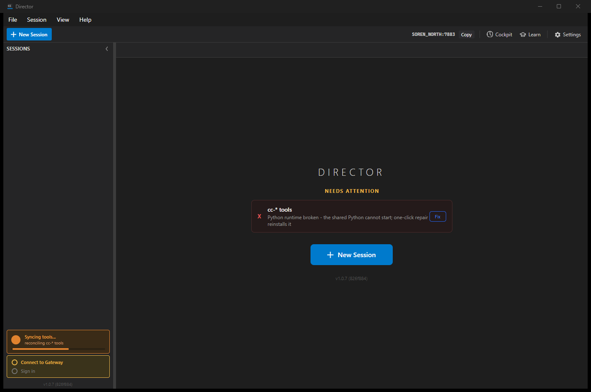
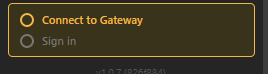
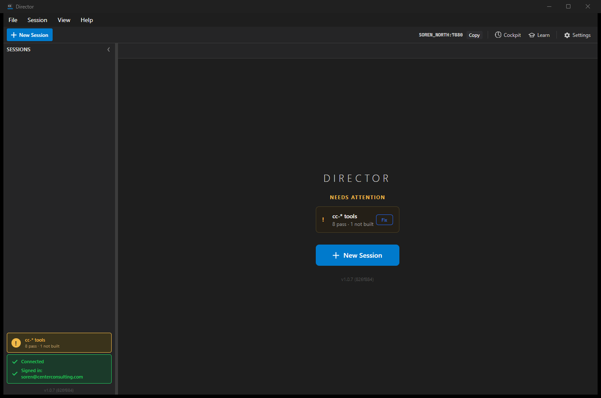
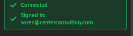
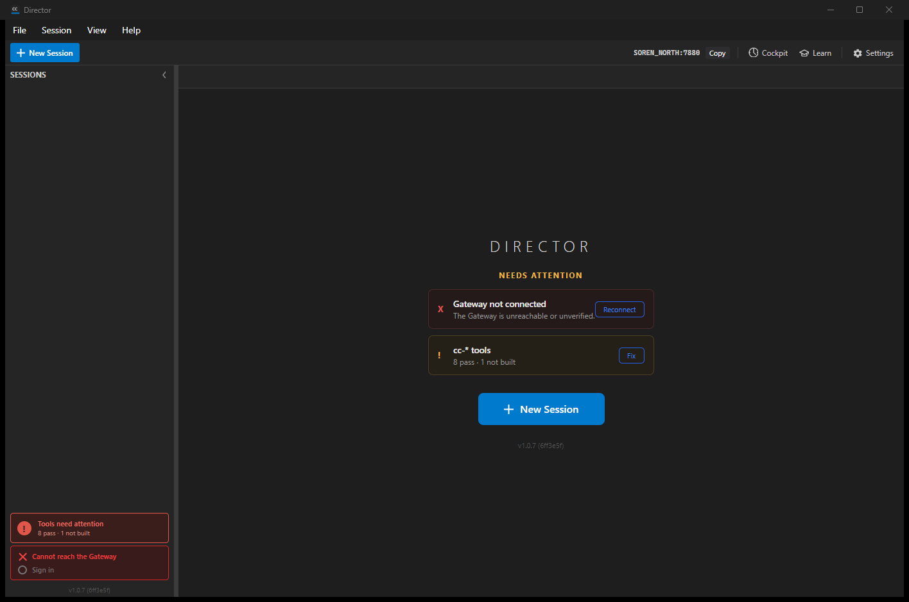
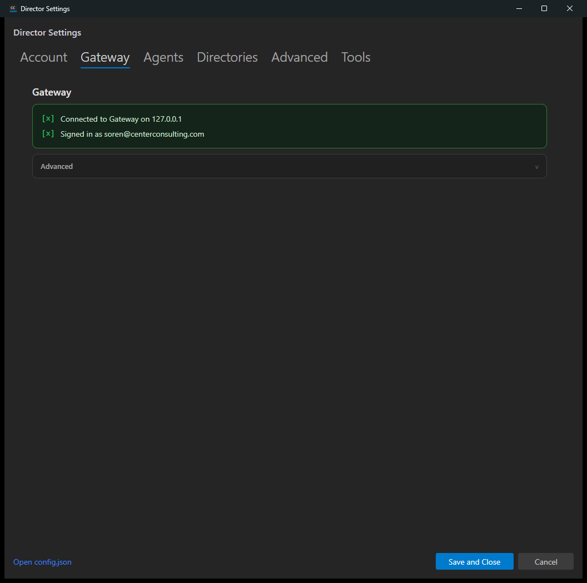
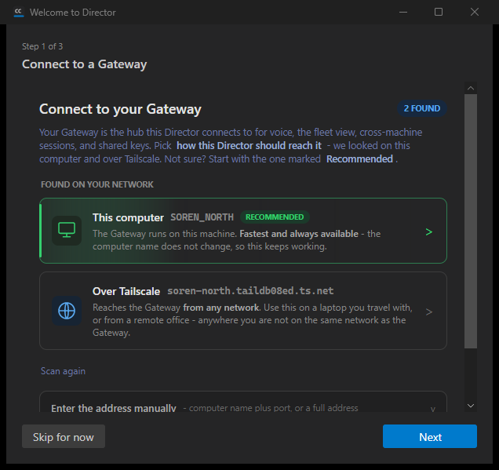
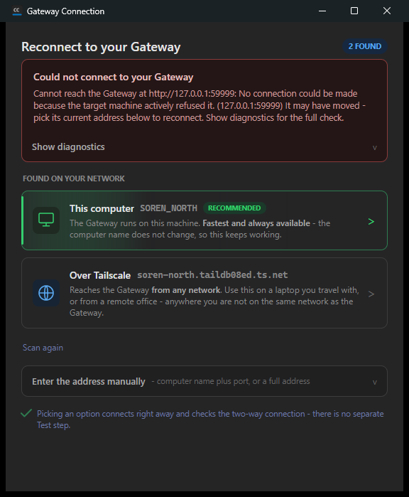
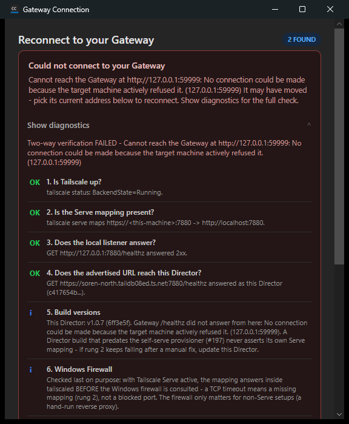

Design spec: docs/reviews/gateway-connection-redesign-2026-07-11.md · Mission: Gateway Connection redesign · All five build phases merged to origin/main.
This report gathers the running-app evidence for every state and step of the redesign, across all five phases, plus the Mac verification pass and the end-to-end success test. Every screenshot is from the real app running on SOREN_NORTH (Windows) or Sorens-Mac-mini (macOS) against the real Gateway.
The desktop Director's Gateway setup went from a page of plumbing (URL box, two Detect buttons, a Test button, a token box, a pairing-code dialog, a re-run-wizard button, a troubleshooter dialog, and two stacked status boxes) to ONE guided flow, in ONE reusable panel, reachable from ONE status box. A brand-new machine reaches "fully connected" by doing exactly three things: click the amber status box, click Connect, sign in with DevThrottle. No URL typed, no Detect, no Test, no pairing codes, no separate dialogs.
| Phase | Delivered | Pull request | Status |
|---|---|---|---|
| 1 | The reusable panel + the pure state resolver; Step 1 connect (automatic issue-1233 scan, one-click picks, manual fallback under Advanced, live handshake, named failures) | merged | Done |
| 2 | Sign-in step (DevThrottle browser sign-in issues this device its token) + the green Done view | #1393 | Done |
| 3 | One merged status box (GatewayStatusBox) with two check lines and four visual states | #1406 | Done |
| 4 | Settings cleanup: the Gateway tab IS the panel; Account tab = summary + one button; onboarding embeds the panel; the whole deletion list executed; pairing dialog deleted | #1409 | Done |
| 5 | Repair mode: red-state routing, inline diagnostics, automatic changed-address rediscovery, re-sign-in to Step 2; troubleshooter dialog deleted | #1417 | Done |
Both the panel and the status box render from ONE pure resolver (GatewayConnectionStateResolver) that reduces the two verification sources (the two-way handshake and the Gateway's own signed-in report) into a single state. Green is earned, never assumed: Connected green only from the proven handshake, Signed-in green only from the Gateway's report.
| Resolved state | Meaning | Box | Panel opens on |
|---|---|---|---|
| NotConfigured | No Gateway address, never connected | Amber | Step 1 (connect) |
| Connecting | Address set, handshake verifying | Yellow | Step 1 (progress) |
| ConnectFailed | Handshake failed, a named leg is down | Red | Step 1 (repair) |
| ConnectedNotSignedIn | Handshake proven, device has no token / signed out | Amber | Step 2 (sign in) |
| AllGreen | Handshake proven AND Gateway reports signed in | Green | Done view |
| WasConnectedNowUnreachable | Was green this run, now the handshake is failing | Red | Step 1 (repair) |
Unit-tested in isolation (plain inputs in, resolved state out, no UI, no I/O): 30 GatewayConnection Core tests pass, including the red-state precedence (WasConnectedNowUnreachable outranks ConnectFailed only when wasEverConnected is true this run) and the "never a false green / never a false sign-out" rules.
The two former bottom-left boxes (GatewayIndicator + AccountIndicator) merged into ONE box with two check lines. One click opens the panel on the resolver's current step.





Yellow (Connecting) is a brief transient handshake state; it is pinned by the presenter unit tests rather than a still screenshot, as is the "cannot tell yet" muted account line.


By the end of Phase 4/5 none of the following is reachable from the user interface. Verified by grep across src/ (excluding build output): every name resolves to 0 references.
| Removed control / dialog | References in src |
|---|---|
DetectGatewayButton, TestGatewayButton, DetectPublicUrlButton | 0 |
GatewayTokenBox (plain-text token) | 0 |
ConnectToGatewayButton + the whole ConnectToGatewayDialog (pairing code) | 0 (files deleted) |
RerunOnboardingButton | 0 |
GatewayUrlBox, GatewayAdvertisedBox (demoted to the panel's Advanced manual entry) | 0 |
GatewayTroubleshootDialog (dialog-as-destination; diagnostics now inline) | 0 (files deleted) |

http://127.0.0.1:59999). The header reads "Reconnect to your Gateway", the banner names the exact failure, and the issue-1233 rediscovery scan has run automatically, offering the Gateway's current address as a one-click fix ("This computer" recommended + "Over Tailscale").
GatewayConnectivitySelfTest ladder inline: the two-way verdict plus every rung (Tailscale up, Serve mapping, local listener, advertised URL reaches this Director, build versions, Windows firewall). The GatewayTroubleshootDialog window is deleted; the logic is reused.ConnectedNotSignedIn resolves to GatewayPanelStep.SignIn (unit test Resolve_HandshakeProvenButSignedOut_IsConnectedNotSignedIn_OpensOnSignIn), and the panel's routing to Step 2 is unchanged from Phase 2. A live re-capture against the production Gateway is not possible because a fresh unauthenticated device is correctly refused registration with HTTP 401 (auth enforcement is on by design), so a live "connected but signed out" state is unreachable there. The Mac browser-launch pass (section 7) shows the sign-in step in action.
Run on Sorens-Mac-mini (repo /Users/soren/ReposFred/devthrottle), on merged origin/main (9b821edf). One Avalonia codebase, so this is a verification pass, not a port. The three platform-sensitive spots are network discovery, browser launch, and the per-device token storage path.
Deferred and tracked as GitHub issue #1420. To move to live Windows testing without waiting on the Mac, the macOS verification pass was split out. All five build phases are merged and Windows-verified; the Mac run (network discovery, browser launch, per-device token storage path, plus the green Done view and merged status box) is scheduled on Sorens-Mac-mini and will be folded into this section when complete. One Avalonia codebase, so no porting is involved — this is a platform verification pass, not a code change.
The happy path, from a clean profile to two green checks without typing a URL: click the amber box → click Connect → sign in with DevThrottle. Each leg's UI is shown above:
A real new cc-director was built from merged origin/main (9b821edf) to slot 5 and launched via the cc-director-launch Task Scheduler task (parent = svchost, so grandchild agents get clean stdio). This device inherited an existing device token, so it proves boots-clean / registration / handshake / session / Cockpit — but NOT the token-less earn-green of 11.3 (that is Part B). Verified against the real Gateway on SOREN_NORTH:
| Check | Result |
|---|---|
| Boots clean | No crash / functional error; tool health pass=8, fail=0. (The only Exception/ERROR/FAIL log substrings are benign status lines plus two pre-existing best-effort calls — startup telemetry 401 "ignored" and one usage-stat retry — unrelated to this mission.) |
| Gateway registration | POST /directors/register → 201; instance file written to the real discovery dir (in the fleet). |
| Two-way handshake | Handshake PASSED: two-way connection verified (Connected). |
| Signed in + device token | ApplyAccountStatus: account=SignedIn, deviceKey=True, reachable=True → merged status box GREEN, both checks. |
| Session creation (ConPty) | POST /sessions created session #104 (Gateway-issued number) which reached WaitingForInput/Idle — a real claude.exe child survives under the Director. Session creation works with zero ConPty errors. |
| Cockpit | Front door up at https://soren-north.taildb08ed.ts.net/; the Director and session #104 are visible in the fleet (the data Cockpit renders). |
| # | Criterion | Status |
|---|---|---|
| 11.1 | All five phases merged to origin/main, each with resolver/presenter unit tests, each human-verified on Windows against the real Gateway | Met |
| 11.2 | The section-8 deletion list fully executed — none of the removed buttons, boxes, or dialogs reachable from the UI | Met (grep = 0) |
| 11.3 | The end-to-end success test passes on a fresh profile: clean start to two green checks without typing a URL | In progress — pending the fresh-profile live sign-in (Part B). A token-less device must EARN green; the go-live table only proves a token-holding device. |
| 11.4 | The Mac verification pass (network discovery, browser launch, per-device token storage path) | Deferred — tracked as issue #1420 (section 7) |
| 11.5 | This final verification report with screenshots from the running app | This document |
Generated for the Gateway Connection mission. Screenshots are the committed proof under docs/reviews/gateway-connection-phase{3,4,5}-proof/ and the Mac pass folder.